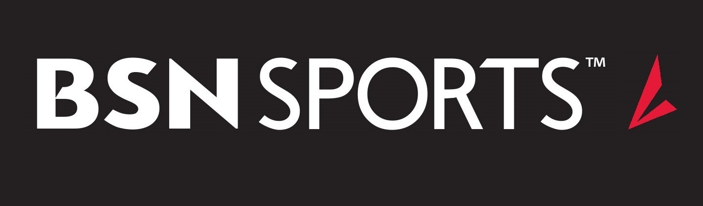
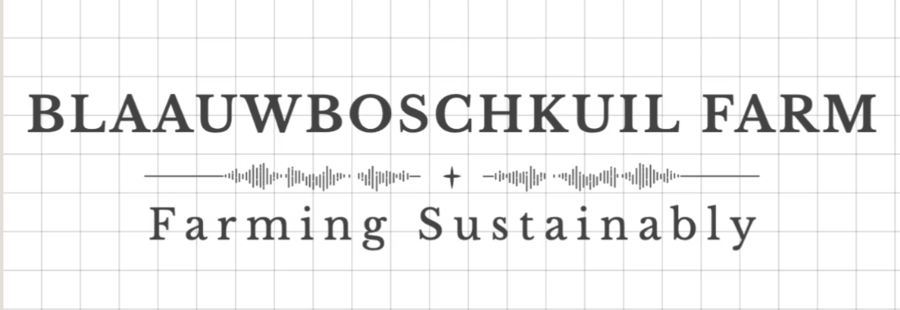

Work Experience
Project Leader (Data Science - LPC Program)
Lindenwood University Sports Department, Saint Charles
September 2024 - Present
- Collection, processing, and analysis of performance data for baseball, softball, and basketball teams, including advanced metrics such as Rapsodo readings and other specialized baseball data.
- Developed and launched custom websites from scratch for each team, providing game charters, visualizations, and interpreting performance statistics in over 8 areas for athletes.
- Ensured the accuracy and integrity. Leveraged R and SQL in translating over 20,000 raw metrics in each area into clear, actionable insights for coaching staff and players.
- Collaborated closely with team management and coaching staff to tailor data dashboards and reports, improving decision-making in player development and game strategy.

SAP Implementation Intern
Varsity Brand / BSN Sports and Varsity Spirit, Dallas
June 2023 - September 2023
- Responsible for master data gathering, analysis, scrubbing, and mapping, ensuring data integrity and accuracy for a 37,230 SKU database.
- Reviewed the scope and documentation of new processes during ERP implementation of production and manufacturing.
- Reviewed and optimized 37,230 SKU database, eliminating duplicates and obsolete entries, reducing overall size to 20,000 styles.
- Responsible for manual master data loads, including work centres, routings, and other relevant data, when required.
- Project Management scribe; contributing to the review of results, prioritization of tasks, and planning for future initiatives.

Agricultural Production Assistant (Part Time)
Blaauwboschkuil Farming Sustainably, Port Elizabeth, South Africa
January 2018 – August 2021
- Responsible for the optimization of feeding and production processes for lamb and chickens, going from purchased feed to internally produced, resulting in a 50% cost reduction while maintaining all necessary nutritional and quantity needs.
- Designed and authored the manufacturing process for the animal feed of 2,000+ sheep.
- Reviewed and modified logistical process of onsite transport, resulting in a 5% improvement.
- Installation of solar water pumps, repaired pipelines, constructed drainage systems, and erected fences to support Strip Grazing to improve the farm’s carrying capacity and water availability by 20%.